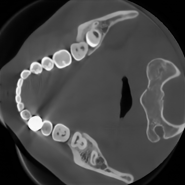
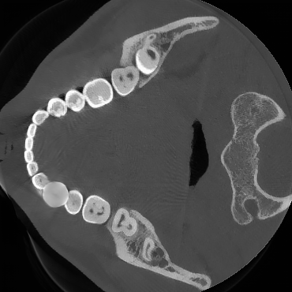
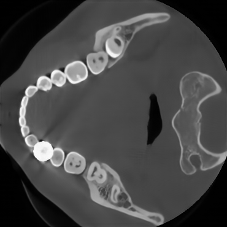
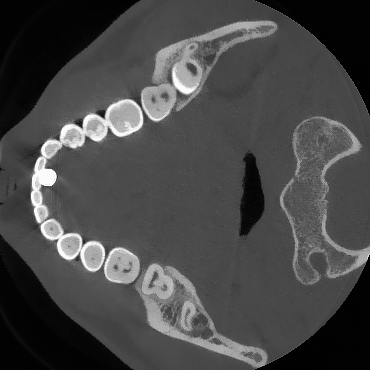
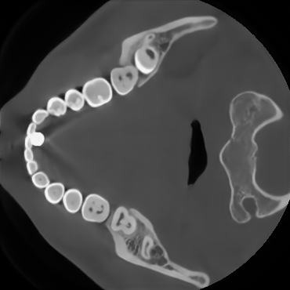
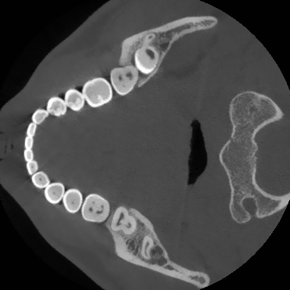

Two evaluation tracks
SimulationPaired inputs + clean references
Boundary preservation audit
Boundary preservation audit
ClinicalItem-wise expert judgments
Crown + adjacent anatomy
Crown + adjacent anatomy
Clinically-Aligned and Auditable Quality Evaluation
for Dental CBCT Reconstruction
Anatomy-aware evaluation · Observation-locked reasoning · A two-track benchmark
Explore real reference segmentations. Twelve cases, three acquisition subsets, one shared anatomical color system.
Drag to rotate · Scroll / pinch to zoom · Right-drag / two-finger drag to pan. Use the view buttons for fixed perspectives.
Select a case below to explore its complete 3D surface above.
Reference segmentation gallery. Surfaces are derived from public ToothFairy3 annotation volumes, not CLAIRE predictions. A/B/C identify the source dataset’s acquisition subsets, not the eight centers in CLAIRE-Bench. The first four filename-sorted cases from each subset are shown; anatomical coverage varies with the original field of view.
Colors identify annotated structures. Surface extraction uses 2-voxel sampling, light Gaussian smoothing and marching cubes; these display meshes are not intended for quantitative measurement. No patient images or private hospital annotations are included in this gallery.
Source: ToothFairy3 dataset · Challenge and license · Full attribution and processing. Derived surfaces and preview images: CC BY-NC-SA 4.0.
Bolelli et al., Multi-structure segmentation in CBCT volumes: The ToothFairy2 challenge, Medical Image Analysis; Bolelli et al., Segmenting Maxillofacial Structures in CBCT Volumes, CVPR 2025; Lumetti et al., Enhancing Patch-Based Learning for the Segmentation of the Mandibular Canal, IEEE Access 2024.
 Amalgam · Input
Amalgam · Input Amalgam · AMIFound
Amalgam · AMIFound
Amalgam · HorusEye Amalgam · Reference
Amalgam · Reference
Crown · AMIFound
Crown · HorusEye Crown · Reference
Crown · Reference
Implant · AMIFound
Implant · HorusEye
Implant · ReferenceFrom restored images to local anatomical observations and auditable judgments.
Figure 1. Framework overview. CLAIRE connects a two-track benchmark with anatomy-specific evaluation. The observation is committed before reference consultation; any later revision preserves the original record and its supporting evidence.
Drag the divider to inspect the same slice before and after restoration.
Real simulation example · ToothFairy3 · shared display window
Restorations by the selected method. CLAIRE evaluates, rather than restores.
01 / THE EVALUATION GAP
A global quality score can improve while a tooth boundary deteriorates. We call this covert anatomical damage.
CLAIRE makes the questions local: Is the margin traceable? Is the contour intact? Can you still identify the enamel–dentin junction?
AMIFound pairs with BF1 deterioration
beyond the predefined threshold
Joint SSIM–BF1 conflicts:
SSIM increases while BF1 deteriorates
Different events, different rates.
3,048 tooth-masked simulated pairs;
0.25 mm boundary tolerance.
02 / EXPERIENCE THE PROTOCOL
Make your own observations before seeing a precedent. Lock the record, inspect an example, then decide what to keep. Every revision leaves a trace.
Explore the clinical rubric on a simulated example. This walkthrough does not supply expert ground truth or run a model.
CLAIRE-LOCK / OBSERVATION COMMITTED
Your original answers stay locked. The following synthetic teaching cards demonstrate how a precedent can inform a revision; they are not expert patient records or retrieved nearest neighbors.
A revision needs visual evidence. Without it, the locked observation is retained.
| Item | Locked | Final | Decision / evidence |
|---|
Explore the existing atlas, browse demonstration precedents, annotate your own images, and export a local audit record.
03 / CLAIRE-BENCH
Reference-based simulation reveals anatomical damage. Clinical cohorts test agreement with expert item-wise judgments. Their roles and denominators stay distinct.
→Plus 52,811 parametric variants. A separate tooth-mask audit covers 3,048 slice–metal pairs from 508 cases.
Agreement is evaluated on valid answers with coverage reported separately. New visitor annotations are not expert ground truth.
Main pool 7,119
Parametric variants 52,811
7,119 main-pool pairs. Eight sources comprise two public corpora and six anonymized hospital collections.
Figure 2. Dataset composition. The simulation pool contains 7,119 main-pool pairs and 52,811 parametric variants. Eight sources comprise two public corpora and six anonymized hospital collections. A295 and B135 form the separate clinical evaluation track.
04 / WHAT THE EVIDENCE SAYS
Local grounding improves item agreement. Observation locking targets retrieval-induced coverage collapse. These are different contributions, not one combined result.
Figure 3. Clinical evaluation on 105 held-out pairs. Compare crown and adjacent-anatomy results across four evaluation settings. Switch between agreement and valid coverage; the two metrics describe different aspects of evaluation.
CLAIRE-Lock preserves 99.5% / 97.6% valid coverage, but crown agreement remains below CLAIRE-Loc. A traceable revision can still be wrong.
Real and simulated artifacts remain separable (C2ST AUC > 0.97). Clinical validation remains essential.
Inspect the benchmark, try the clinical rubric, and trace the evaluation process.
CLAIRE is an evaluation framework with a training-free core. Optional CLAIRE-Route uses supervised out-of-fold development. This website is a static research demonstration: the slider shows precomputed restorations; the protocol walkthrough uses your inputs and illustrative precedents. The complete clinical library and model inference are not hosted here.
Visual samples: ToothFairy3 public-source simulated examples. Counts and results: the CLAIRE manuscript and frozen experiment records. Clinical hospital images, patient identifiers, API credentials, and the manuscript PDFs are not bundled with this site.
View sample provenance ↗